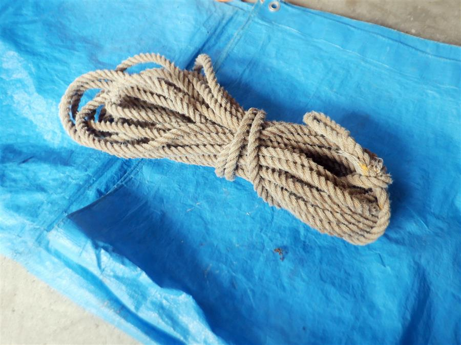
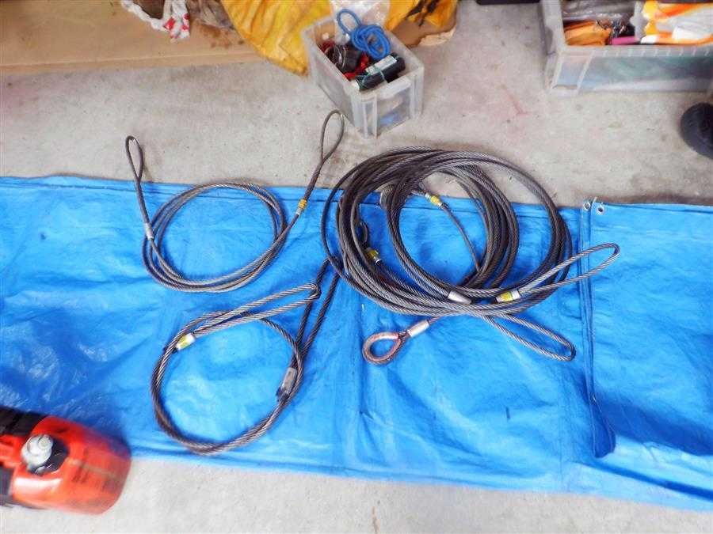
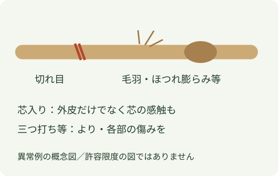
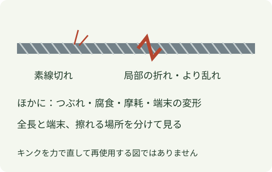

ロープとワイヤーの点検
同じ「ロープ」でも、繊維製か鋼製か、何を支えるものかで点検が変わります。最初に用途・製品名・履歴を合わせ、次に全長と端末を見ます。


1 使う前に、何のロープか合わせる
- 繊維製：運搬用・引綱・人体確保用などを区別。ナイロン、ポリエステル等の材質や構造は、色だけで判定しません。
- ワイヤー：チルホール専用、玉掛け用、固定用等を区別。径が同じだけで互換とはしません。
- 履歴：表示、購入・使用開始時期、強い衝撃や熱・薬品との接触、前回点検記録を確認します。
2 繊維ロープは、全長と端末を

張力のない状態で、全長の表裏を順に見ます。切れ目、ほつれ、熱で硬化・溶けた様子、薬品に触れた痕跡、端末の縫製や加工の変化を確認します。芯入りロープは、指定の点検方法に沿って硬い・柔らかい・潰れた部分も探します。
三つ打ち等のよりロープと芯・外皮構造では見る部分が違います。芯入りの説明を、全てのロープの構造だとは扱いません。表面がきれいでも、履歴や内部の傷みが否定できるわけではありません。
3 ワイヤーは、形と細い鋼線を

素線の切れ、局所的な折れ・より乱れ、つぶれ、腐食、細くなった部分を全長で確認します。フック、アイ、圧着部など端末の変形やずれも別に見ます。手袋を使い、突き出た素線へ手を滑らせて探しません。
キンクは単なる巻き癖とは異なる局部の変形です。力で伸ばして形が戻ったように見えても、使用可能の確認にはなりません。径の測定や素線切れの評価は、採用品の構造・基準に沿って行います。
4 異常を見つけたら
使用から外す → 他の正常品と分ける → どの部分に何があるかを記録 → 責任者・点検担当へ渡す。
傷みを隠す、切り詰める、油やテープで見えなくして使い続ける判断はしません。繊維ロープにワイヤー用油を使うなど、手入れ方法も混ぜません。
5 点検時期と廃棄基準は別に確認
社内聞取りでは、ワイヤー類・帯・Oリング等の月1回点検と、ワークポジショニングロープの毎朝・使用前点検が説明されています。これは当時の社内説明で、使用前確認や採用品メーカーの指定を置き換えるものではありません。
今回の写真では製品名・材質・構造・製造年の全てを確定できません。残存径、切れた素線数、経過年数などの廃棄数値を全用品共通では掲載していません。表示と取説を合わせ、異常のある物は判定まで使用から外します。
出典と適用範囲
- Petzl：ロープ点検方法 — Petzl製品用。外皮・芯・端末・履歴を分ける観察の参考。会社採用品の認定や周期・寿命の一律適用ではありません。
- 東京製綱：ロープの取り扱い方 — ワイヤーの摩耗・断線・腐食・形くずれと端末点検。用途別の廃棄数値は会社全品へ転用していません。
2026年10月25日確認。図は独自作成です。掲載写真は受領済みの会社写真に限り、原典の図・写真は転載していません。
社内の点検時期は2026年10月17日の聞取りに基づきます。写真は現在の健全性を保証しません。